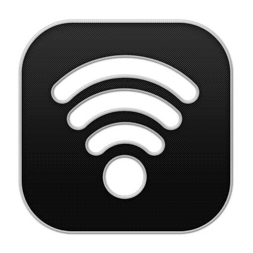

<div class="well no-padding no-margin hidden-sm hidden-xs">
    
    <div class="pull-right ">
        <label class="text-primary no-margin">Visitas:</label><br class="no-margin"/>
        <a href="https://www.cerotec.net/estadisticas-99016/arsensys.github.io" class="no-margin" title="contador visitas">
            
        </a> 
    </div>
</div>
<nav class="navbar navbar-inverse navbar-static-top">
    <div class="container">
        <div class="navbar-header">
            <button type="button" class="navbar-toggle collapsed" data-toggle="collapse" data-target="#navbar" aria-expanded="false" aria-controls="navbar">
                <span class="sr-only">Toggle navigation</span>
                <span class="icon-bar"></span>
                <span class="icon-bar"></span>
                <span class="icon-bar"></span>
            </button>
            <a class="navbar-brand hidden-xs" href="#">UNAD</a>
            
        </div>
        <div id="navbar" class="navbar-collapse collapse">
            <ul class="nav navbar-nav">
                <li id="mnhome"><a href="index.html">Inicio</a></li>
                <li class="dropdown">
                    <a href="#" class="dropdown-toggle" data-toggle="dropdown" role="button" aria-haspopup="true" aria-expanded="false">Lecturas <span class="caret"></span></a>
                    <ul class="dropdown-menu">             
                        <li><a href="reading_1.html">Lectura 1: Seguridad en VoIP: Ataques, Amenazas y Riesgos</a></li>
                        <li><a href="reading_2.html">Lectura 2: HACKERS 2 Secretos y soluciones para la seguridad de redes</a></li>
                        <li><a href="reading_3.html">Lectura 3: Tipos de Ataques</a></li>
                        <li><a href="reading_4.html">Lectura 4: Identificaci&oacute;n de ataques y t&eacute;cnicas de intrusi&oacute;n</a></li>
                        <li><a href="reading_5.html">Lectura 5: Monitoreo y An&aacute;lisis de Redes</a></li>
                    </ul>
                </li>
                <li class="dropdown">
                    <a href="#" id="mnmedia" class="dropdown-toggle" data-toggle="dropdown" role="button" aria-haspopup="true" aria-expanded="false">Multimedia <span class="caret"></span></a>
                    <ul class="dropdown-menu">             
                        <li><a href="media_1.html">Video 1: Seguridad de la red: perspectivas ejecutivas - Cisco Espa&ntilde;a</a></li>
                        <li><a href="media_2.html">Video 2: Introducci&oacute;n a la seguridad inform&aacute;tica</a></li>
                    </ul>
                </li>         
                <li class="dropdown">
                    <a href="#" id="mntest" class="dropdown-toggle" data-toggle="dropdown" role="button" aria-haspopup="true" aria-expanded="false">Actividades <span class="caret"></span></a>
                    <ul class="dropdown-menu">             
                        <li><a href="activities_12.html">1) Preguntas sobre m&eacute;todos de cifrados de datos</a></li>
                        <li><a href="#">2) Examen sobre protocolos de seguridad</a></li>
                        <li><a href="#">3) Actividad tipo ICFES sobre vulnerabilidades</a></li>
                        <li><a href="#">4) Examen de comprensi&oacute;n de lectura</a></li>
                        <li><a href="#">5) Actividad sobre definici&oacute;n de conceptos</a></li>
                        <li><a href="#">6) Examen final sobre conocimientos generales</a></li>
                    </ul>
                </li>
                <li><a href="autors.html">Autores</a></li>
            </ul>
        </div>
    </div>
</nav>